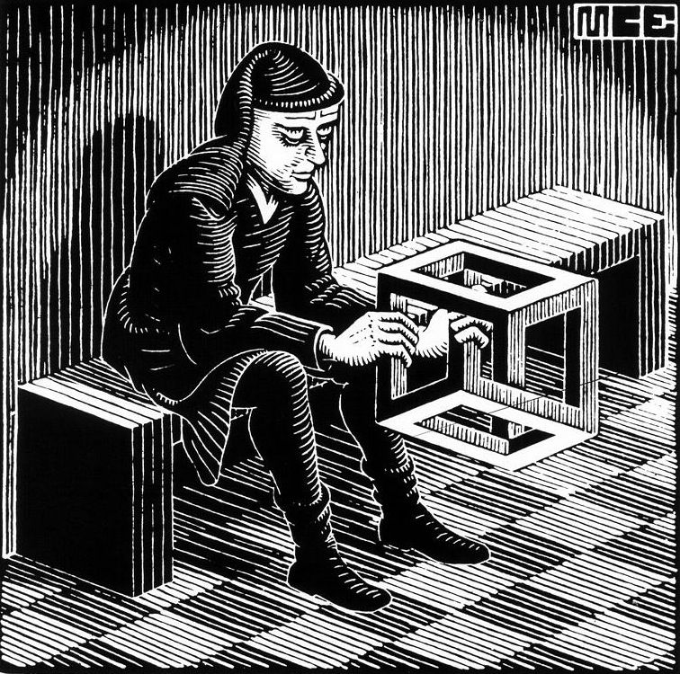

Le chat de Schrödinger
L'API Optional dans la programmation fonctionnelle
Auteur Andrea Cesaro, powered by: Reveal.js
Résumé de la présentation
- L'erreur d'un milliard de dollars
- Comment fonctionne l'API Optional
- Exemples
- Implémentation
L'erreur d'un milliard de dollars
Cette fonction est un mensonge
double division(double a, double b){
return a/b;
}
...
double result = division(a,0);
...
Cette fonction est maladroite
double division(double a, double b) throws Exception {
return a/b;
}
...
double result;
try{
result = division(a,b);
... // do something with result
} catch(Exception ex) {
... // do something else
}
Cette fonction est un erreur d'un milliard de dollars
Double division(double a, double b) {
if(b == 0) {
return null;
} else {
return a/b;
}
}
Scénario habituel
...
Double result = division(a,b);
... // do something with result
Le meilleur scénario
...
Double result = division(a,b);
if(result != null) {
... // do something with result
} else {
... // do something else
}
encore et encore...
Nous voulons transformer la forme de ce code en une structure de données / type
if(x != null) {
... // do something with x
} else {
... // do something else
}
// do something with x- filtrer \(x\)
- transformer \(x\) en \(y\)
- consommer \(x\)
// do something else- obtenir une valeur par défaut
- lève une exception
Comment fonctionne l'API Optional
Optional c'est une boîte
Elle peut être vide
ou elle peut contenir une valeur (objet)
On peut y penser comme une liste avec au plus un élément
Produire un Optional
empty
Optional<Circle> oCircle = Optional.empty();
of
Optional<Circle> oCircle = Optional.of(new Circle());
ofNullable
Optional<Circle> oCircle = Optional.ofNullable(getCircle());
Filtrer un Optional
filter
Optional<Circle> newOCircle = oCircle
.filter(c -> c.isBlack());
Mapper un Optional
map
Optional<Triangle> oTriangle = oCircle
.map(c -> toTriangle(c));
FlatMapper un Optional

flatMap
Optional<Triangle> oTriangle = oCircle
.map(c -> toTriangleIfBlack(c));
Extraire ou obtenir une valeur par défaut
orElse
Circle circle = oCircle
.orElse(new Circle("white"));
Extraire une valuer ou lever une exception
orThrow
Circle circle = oCircle
.orThrow(() -> new Exception());
Consume une valuer
ifPresent

oCircle.ifPresent(c -> insertDB(c));
Vérifier s'il y a une valeur
isPresent
boolean isPresent = oCircle
.isPresent();
Obtenez une valeur
get
Circle circle = oCircle
.get();
Exemples
Si nous ne pouvons pas changer la méthode que nous appelons
Double division(double a, double b) {
if(b == 0) {
return null;
} else {
return a/b;
}
}
...
Optional<Double> oResult = Optional.ofNullable(division(a,b));
...
Si nous pouvons changer la méthode que nous appelons
Optional<Double> division(double a, double b) {
if(b == 0) {
return Optional.empty();
} else {
return Optional.of(a/b);
}
}
...
Optional<Double> oResult = division(a,b);
...
Filtrer un résultat
...
Double result = Optional.ofNullable(division(a,b))
.filter(r -> r > 1)
.orElse(0);
...
Appel sécurisé des méthodes
...
String result = Optional.ofNullable(division(a,b))
.map(r -> r.toString())
.orElse(null);
...
Composition des Optional
...
Double result = Optional.ofNullable(division(a,b))
.flatMap(r -> division(r,c))
.orElse(0);
...
Implémentation
Live code !

Email: andrea.cesaro-ISC.france
Slack IBM: lambda